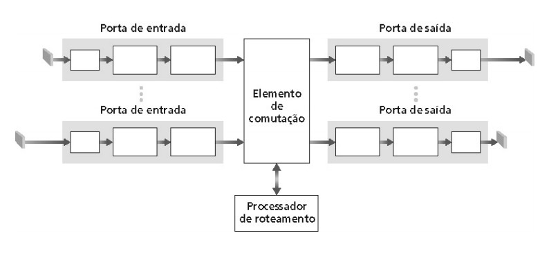

Redes de Computadores
Professor Ricardo Ferreira - https://ricardoferreira.site
Especialista em Redes Locais e Metropolitanas (UEMA) Bacharel em Ciência da Computação (UFMA)
Roteiro
- Camada de rede
- Circuitos Virtuais x Rede de datagramas
- Roteamento
Objetivos
- Entender princípios dos serviços da camada de rede
- Roteamento
- Descrever as principais funções e recursos de um roteador.
- como um roteador cria uma tabela de roteamento para redes diretamente conectadas.
- Explique como um roteador cria uma tabela de roteamento usando rotas estáticas.
- Explique como um roteador cria uma tabela de roteamento usando um protocolo de roteamento dinâmico.
Camada de Rede

Camada de Rede
- Transporta segmentos do hospedeiro transmissor para o receptor
- No lado transmissor, encapsula os segmentos em datagramas
- No lado receptor, entrega os segmentos à camada de transporte
- Protocolos da camada de rede
- Executados nos sistemas finais e nos roteadores
Camada de Rede
Camada de Rede
Camada de Rede
Camada de Rede

Camada de Rede
Modelo de serviço
Quais maneiras para garantir o “canal” de transporte de datagramas do transmissor ao receptor?
Modelo de serviço
- Definem as características do transporte de pacotes fim-a-fim entre transmissor e receptor
- Cada arquitetura de redes define a sua (ATM, Internet, etc)
- Para pacotes individuais:
- Entrega garantida
- P/ex: Pacote irá chegar ao destino “mais cedo ou mais tarde”
- Entrega garantida com atraso limitado
- P/ex: Pacote irá chegar com atraso menor que 100 ms
- Entrega garantida
Modelo de serviço
- Para fluxos de pacotes:
- P/ex: Entrega ordenada de pacotes
- P/ex: Largura de banda mínima garantida
- P/ex: Serviços de segurança
- Uso de chave secreta de sessão - cifragem do conteúdo de todos os pacotes enviados para o destinatário
Na Internet
- Apenas um protocolo: IP
- Apenas um serviço oferecido: Melhor esforço ("best-effort")
Melhor esforço ("Best-effort")
- Roteadores se esforçam ao máximo para entregar os pacotes
- Nós simples e de baixo custo:
- Encaminhamento de pacote independente um dos outros
- Sem reserva de recursos, recuperação de erros, garantia de acesso
- Atraso dependente do tamanho da fila
- Sem garantia de entrega do pacote ao destino
- Pacote é descartado no roteador se a fila estiver cheia
Circuitos Virtuais x Datagramas
- Camada rede pode oferecer serviços orientados ou não a conexão
- Circuitos virtuais - orientado a conexão
- Usados em ATM, frame-relay, X.25
- Não usados na Internet convencional
- Rede de datagramas - Não orientado a conexão
- Usados na Internet convencional
Circuitos Virtuais
Emular uma rede de comutação de circuitos utilizando comutação de pacotes
- Caminho da origem ao destino “se comporta” como um circuito telefônico
Circuitos Virtuais
Circuitos Virtuais
Rede de datagramas
Usam endereços de destino para rotearem os pacotes. Adoção da comutação de pacotes
- Não existe estabelecimento de conexão
Rede de datagramas
- Roteadores não guardam estado sobre conexões
- Pacotes são encaminhados
- Com base no endereço de destino
- De acordo com o modelo de melhor esforço ("best-effort")
- Dois pacotes entre o mesmo par origem-destino podem seguir caminhos diferentes
Rede de datagramas
Roteador
- Elemento responsável por:
- Determinar o caminho entre um par origem-destino
- Interconectar redes distintas
- Encaminhar pacotes (Encaminhamento x Roteamento)
Encaminhamento x Roteamento
- Encaminhamento (ou repasse ou forwarding)
- “Mover” pacotes de uma entrada do roteador para a saída apropriada
- Função do protocolo IP
- Roteamento (routing))
- Determinar a rota a ser seguida pelos pacotes da fonte até o destino
- Função dos protocolos de roteamento
Encaminhamento x Roteamento
Pacote ao chegar a um roteador:
- Tem seu endereço de destino analisado (best-prefix match)
- Se o endereço for igual ao de uma das interfaces do roteador
- Pacote é enviado para camada de transporte
- Caso contrário
- Pacote é encaminhado a outro roteador pela interface mais indicada
- Se o endereço for igual ao de uma das interfaces do roteador
Encaminhamento porta de entrada x porta saída
Próxima aula
- Detalhamento de cada camada do Modelo TCP/IP e principais protocolos/serviços
- Transferência de dados: Comutação de circuitos x Comutação de pacotes
- Métricas: avaliação do desempenho de uma rede (Jitter, Throughput, atraso de propagação)
Referências
- Capítulo 1 e 2 do Livro “Computer Networks”, Andrew S. Tanenbaum e David J, Wetherall, 5a. Edição, Editora Pearson, 2011
- Capítulo 1 do Livro “Computer Networking: A Top Down Approach”, 5a. Ed., Jim Kurose and Keith Ross, Editora Pearson, 2010
- Notas de aula do Prof. Luís Henrique Maciel Kosmalski Costa - disponível em http://www.gta.ufrj.br/ensino/eel878
- Notas de aula do curso Netcad da Cisco 5.0 - 2014